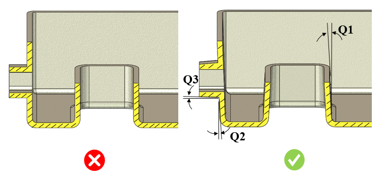

部品の内側および外側の壁について、引き抜き方向に沿った抜き勾配角は、ユーザーが指定した値以上である必要があります。
抜き勾配角の設計は、ダイカスト部品を設計する際の重要な要素です。部品はコア側に収縮しやすい傾向があり、その結果、コア表面に高い接触圧が発生し、コアと部品の間の摩擦が増加します。これにより、金型からの部品の離型が困難になります。
抜き勾配角が小さい場合、金型の抜き勾配面にわずかな凹みがあるだけでも離型が妨げられ、鋳造品表面にドラッグマークが発生します。そのため、部品の離型を補助するために、抜き勾配角は適切に付与する必要があります。また、抜き勾配角を設けることで、サイクルタイムの短縮や生産性の向上にもつながります。抜き勾配角は、引き抜き方向に沿った部品の内壁または外壁に適用する必要があります。
一般的な指針として、コアの抜き勾配角は 1.0 度、キャビティは 2.0 度、サイドコアは 0.5 度とすることが推奨されます。
ユーザーは、業界標準に応じてこれらの値を変更することができます。
ルール UI では、材料の一覧は Map Material から読み込まれ、ユーザーは材料およびそれぞれの値を構成することができます。
材料とその値を構成した後、ユーザーは Ctrl+M コマンドを使用して、ルール UI 上で Material Group およびグレードとともに構成済み材料の一覧をフィルタリングして表示できます。同じキー（Ctrl+M）を使用してフィルターをリセットすることもできます。

Q1 = コアの抜き勾配角
Q2 = キャビティの抜き勾配角
Q3 = サイドコアの抜き勾配角